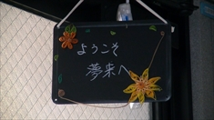

メニュー
ご紹介
こんなことをしています
自宅から出て、生活リズムを身につけ、働くことや仲間と語り合う楽しさを味わえる事業所です。
授産活動・就労体験の機会を作り、個人に合わせて無理なく通所できます。 行事、レクリエーションを通してチームワークや社会生活のマナーを身につけて自立していくことを支援しています。
年齢層は幅広く、「アットホーム」をモットーに元気で明るい笑いの絶えない居場所的空間です。
特徴・方針
夢来は「ムク」と読みます。「むく」という言葉を辞書でひくと「無垢＝汚れのないこと」とあります。ピュアという意味ももちろんありますが、「夢の来るところ」そんな思いもあって「夢来」と名付けました。
個々の状態に合わせた就労活動と、ピアサポートを活動の中心におき、その他随時メンバーの希望を取り入れつつ、話し合ってプログラムを決めています。個々を尊重して、ゆっくり社会復帰を目指します。
責任者メッセージ
夢来は居心地のよい交流の場として誕生しました。南に大きく開いた窓から太陽の日差しがやさしくこの部屋をつつみ、開放的でアットホームな雰囲気は、気がね無く立ち寄って仲間と楽しいひと時を過ごすことができます。穏やかな就労訓練の場として、社会復帰への第一歩を大事にしていきたいと思っています。
誰もが無理をせず、主体的に活動を作りだし、社会生活を送る上での精神的・空間的拠点として、また癒しの場として「夢来」が存在できればと願っています。
利用者の声
自分のペースで通うことができ、スタッフが意見をよく聞いてくれ親切に対応してくれます。スタッフはやさしくて話しやすいです。
草むら通信の発送作業・道路清掃等で工賃がもらえ、就労に向けての訓練ができます。
お昼にはあたたかいご飯とおいしいお味噌汁が食べられます。
希望者は卓球や麻雀、テニス、合唱、手芸を楽しむことができる一方、のんびりと休むことができたり、コーヒーも飲めてくつろげます。
気功健康体操でリフレッシュでき、元気になれます。